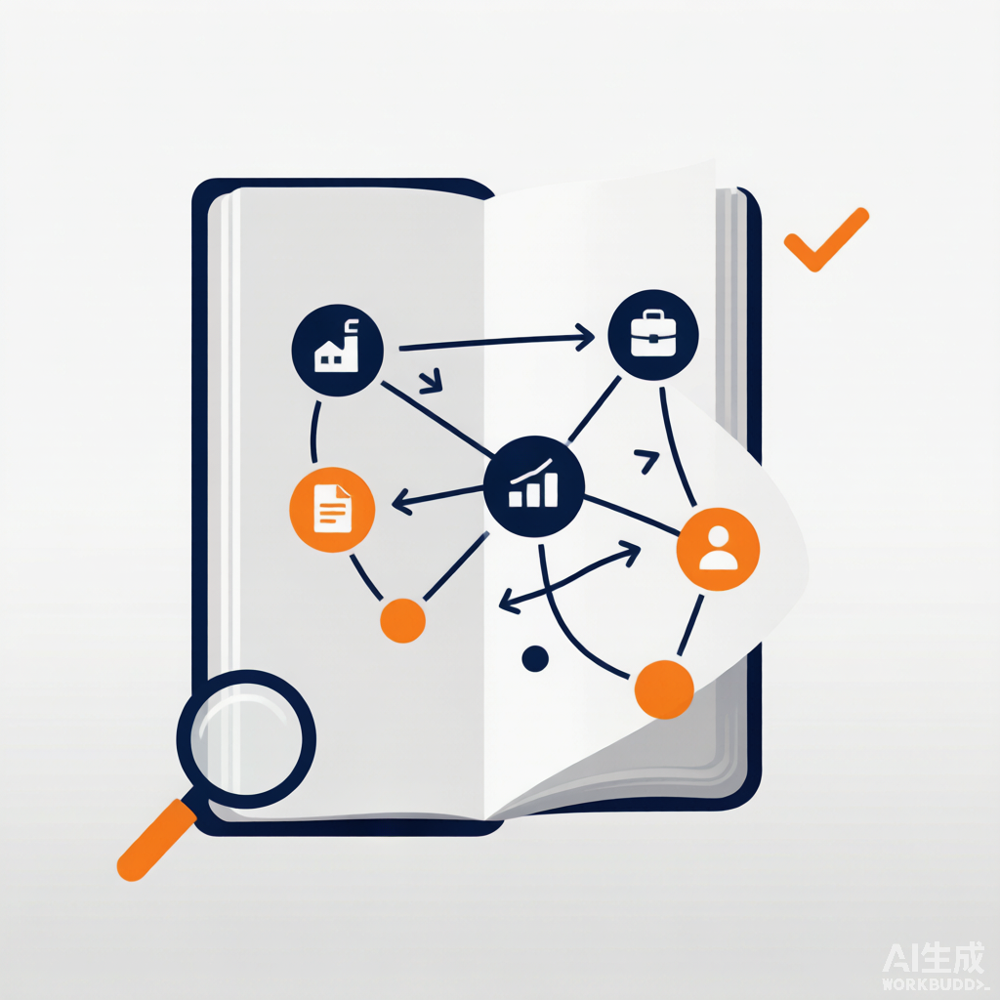
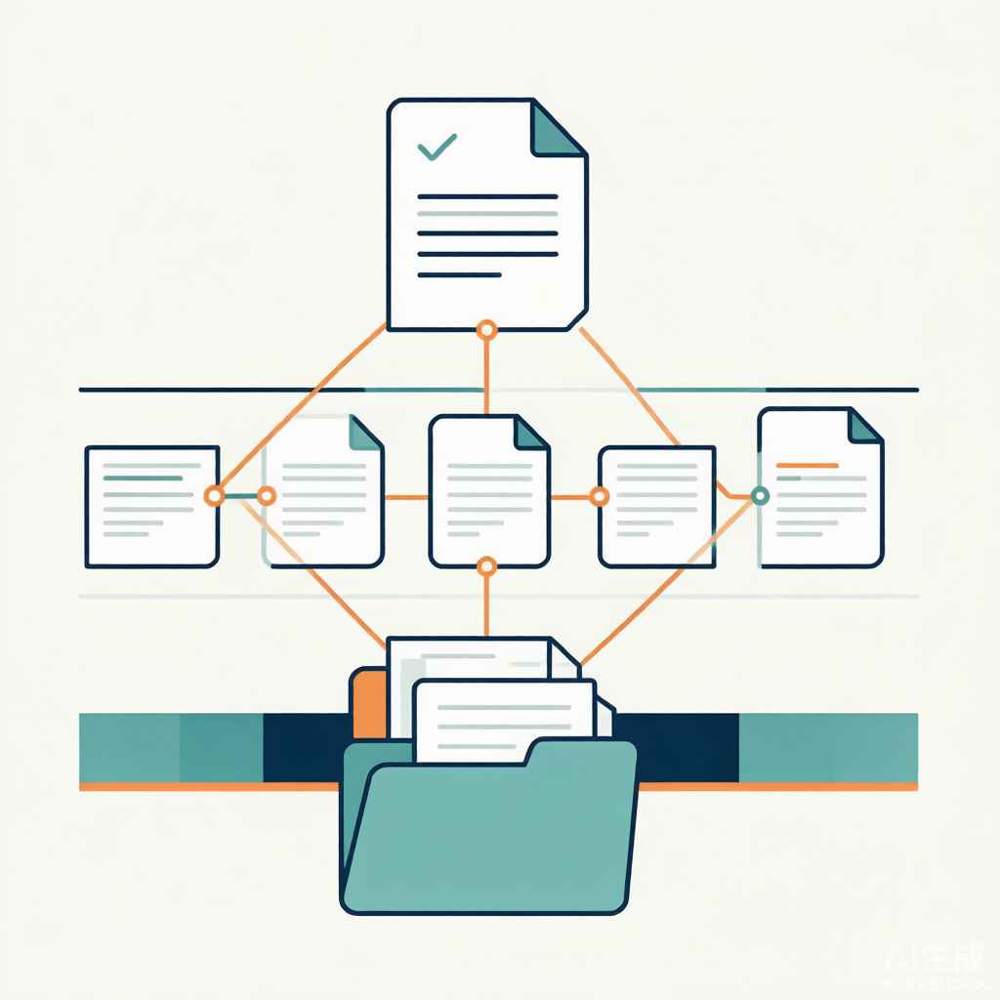
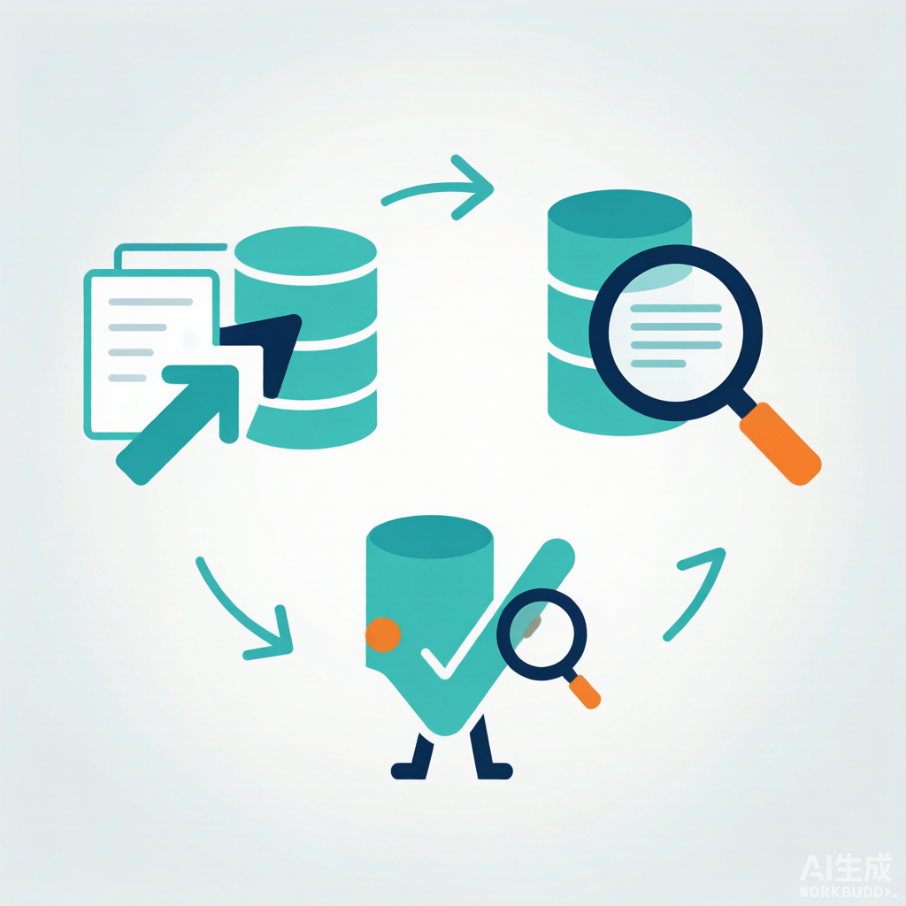
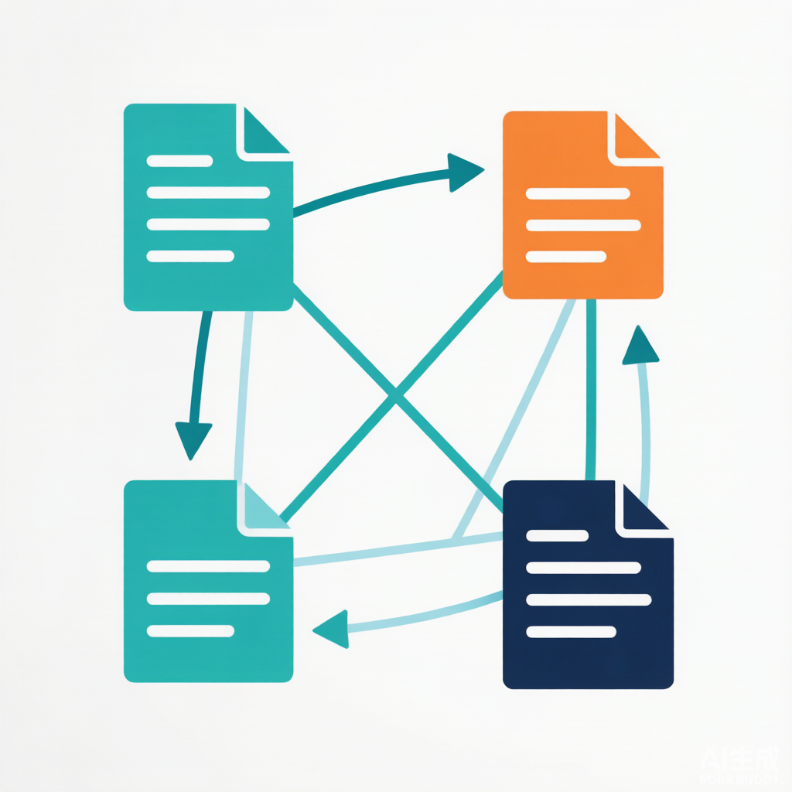
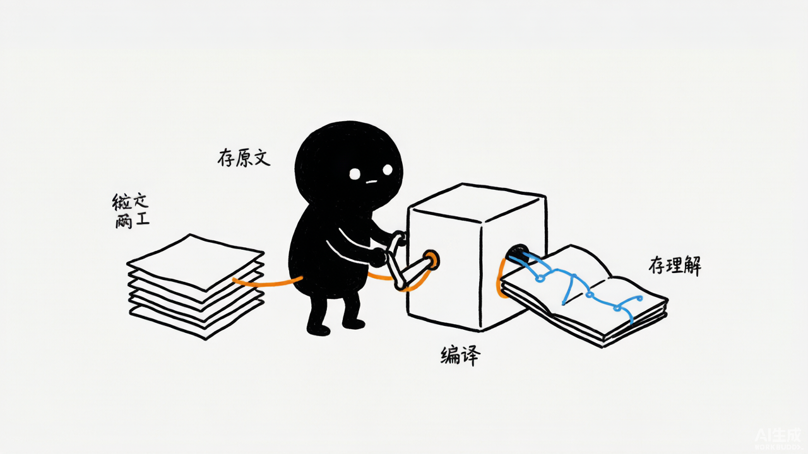
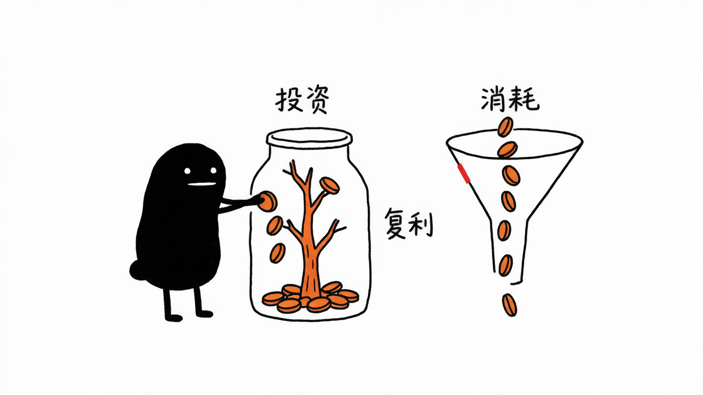

LLM-Wiki -最佳实践
LLM-Wiki: From Zero to Hero

创建者: 标叔 为谁创建: 想让 LLM 帮自己持续攒投研知识、又不想要"每次重检索"的人 基于: https://github.com/xingyunyang01/Geek04 Geek04 项目 4 · deepagents + stock-wiki skill · 2026 最后更新: 2026-08-07 适用场景: 用 LLM 构建并维护一个会自己生长的股票投研知识库 特别感谢: https://time.geekbang.org/column/intro/101170001
阅读指南
| 时间 | 章节 | 目标 |
|---|---|---|
| Day 1 | §01-§03 | 跑通 deepagents，理解为什么是 Wiki |
| Day 2 | §04-§07 | 掌握三层架构与三大操作 |
| Day 3 | §08-§10 | 让知识成网、矛盾显形，工具链接通 |
Part 1: 起步
从"问一次检索一次"，走到"知识持续积累"。
§01 为什么你的投研需要一座"Wiki"，而不是 RAG
01.1 时间线锚点
我做投研，最痛的是知识不沉淀。
去年读过一份宁德时代研报。今年再问，模型不记得。RAG 能检索原文，但它不"理解"——每次从零拼答案，前后矛盾。
2026 年我拆 Geek04 项目 4。stock-wiki 的 SKILL.md 第一段就把我点醒了：
不同于 RAG 每次从零检索，LLM Wiki 让 LLM 持续构建并维护一个结构化的 Markdown 投研 Wiki。每次导入新资料，LLM 不是简单索引，而是阅读、提取、整合——更新个股档案、修订行业逻辑、标注多空矛盾。知识编译一次，持续更新，而非每次查询重新推导。
这一句，是这本书的灵魂。
标叔的经验：RAG 是"图书馆"，Wiki 是"笔记本"
RAG 把原文堆那儿，每次检索片段。它不改原文，不发现矛盾。Wiki 是 LLM 边读边整理的活笔记本。检索快，但理解浅；编译慢，但能复利。
01.2 它跟前三本书的区别
| 维度 | 项目 1/2/3 | 项目 4 |
|---|---|---|
| 知识形态 | 临时、跑完即弃 | 持久、持续积累 |
| 模型角色 | 执行器 | 知识管理者 |
| 核心产物 | 一次性的报告/分析 | 一座会生长的 Wiki |
| 框架 | claude_agent_sdk / smolagents | deepagents |
| 标叔的结论 | 干活 | 攒认知 |
01.3 这本书带你走到哪
读完你能回答：
- deepagents 框架长什么样？跟 claude_agent_sdk 啥不同？
- stock-wiki 的三层架构各自干啥？
- Ingest/Query/Lint 三大操作怎么让知识复利？
认知装好。下一章看框架。
§02 deepagents 框架：模型 + 后端 + skill
02.1 最小形态就三行核心
12-14deepagents/agent.py，剥到骨架：
from langchain_openai import ChatOpenAI
from deepagents import create_deep_agent
from deepagents.backends import LocalShellBackend
model = ChatOpenAI(
model_name="MiniMax-M3",
base_url="https://api.minimaxi.com/v1",
api_key=os.getenv("MINIMAX_API_KEY"))
backend = LocalShellBackend("./", virtual_mode=True) # 关键：给 agent 一个本地后端
agent = create_deep_agent(
model=model,
backend=backend,
skills=["./my-project/skills/"]) # 关键：挂 skill 目录
)
三件套：模型、后端、skill。
02.2 三个关键点
第一，模型走 LangChain。 langchain_openai.ChatOpenAI。deepagents 是 LangChain 之上的框架。MiniMax 走 OpenAI 兼容协议接进来。
第二，后端给"手脚"。 LocalShellBackend("./", virtual_mode=True)。它给 agent 一个本地 shell 后端——能读写文件、跑命令。virtual_mode=True 是虚拟模式，相当于一个半沙箱。这是 deepagents 跟 claude_agent_sdk 最大的不同：后端是一等公民。
第三，skill 是目录。 skills=["./my-project/skills/"]。指向一个文件夹，里面每个子目录是一个 skill。deepagents 自动发现。
02.3 跟 claude_agent_sdk 的对比
| 维度 | claude_agent_sdk | deepagents |
|---|---|---|
| 模型层 | 自有协议 | LangChain |
| 后端 | 工具内建 | 独立 Backend 类 |
| skill 加载 | skills="all" | skills=[目录] |
| 子智能体 | AgentDefinition | （后端抽象） |
| 生态 | Anthropic 系 | LangChain 系 |
| 标叔的结论 | 工程化强 | 灵活、后端可换 |
标叔的经验：后端可换是关键
deepagents 把"在哪儿执行"抽成 Backend。本地用 LocalShellBackend，要隔离能换 Docker backend。执行环境跟 agent 逻辑解耦，这点比 claude_agent_sdk 优雅。
02.4 REPL 循环
messages: list[dict] = []
while True:
user_input = input("You> ").strip()
if user_input.lower() in {"exit", "quit"}: break
messages.append({"role": "user", "content": user_input})
result = agent.invoke({"messages": messages})
reply = result["messages"][-1]
messages.append({"role": "assistant", "content": reply.content})
print(f"Agent> {reply.content}\n")
一个标准的多轮对话循环。messages 列表当记忆。agent.invoke({"messages": messages}) 同步调用，取最后一条回复。
核心建议：多轮记忆自己管
deepagents 不像 claude_agent_sdk 有 session_id。多轮上下文你自己维护 messages 列表。框架给你能力，记忆你自己负责。
框架讲清了。下一章，跑通第一次。
§03 跑通第一次对话：deepagents REPL
03.1 你需要什么
- Python，装 deepagents、langchain-openai
- 一个 MiniMax（或任意 OpenAI 兼容）API key
my-project/skills/stock-wiki/就位
03.2 我们最终做成什么
启动 agent.py，REPL 起来。你输入：
创建一个股票投研知识库
agent 调用 stock-wiki skill，读它的 SKILL.md，按"初始化工作流"建出目录结构、index.md、log.md。
你再输入：
导入这份宁德时代研报
它按 Ingest 流程：markitdown 转 PDF、建摘要页、更新个股页、更新行业页、更新 index、追加 log。
03.3 后端怎么给它"手脚"
deepagents 的 LocalShellBackend 让 agent 能：
read_file/write_file/edit_file：操作 Wiki 的 Markdownexecute_command/bash：跑 markitdown 这类工具
这些是 stock-wiki skill 干活的基础。没有后端，skill 的"建文件、改文件、跑脚本"全是空谈。
03.4 踩坑记录
坑一：路径写死。 stock-wiki SKILL.md 里路径全是 /Users/Admin/workspace/...，原作者机器的。换环境必须改。建议改成相对 ./data/...。
坑二：PDF 不能直接读。 SKILL.md 反复警告："禁止直接 read_file 任何 PDF"。PDF 是二进制，会被 base64 编码塞回模型，既看不懂又烧 token。必须先 markitdown 转 Markdown。
坑三：skill 要在目录里。 skills=["./my-project/skills/"] 指向目录。stock-wiki 是 my-project/skills/stock-wiki/。放错层级，agent 发现不了。
注意：SKILL.md 是 agent 的操作手册
agent 不会"猜"怎么建 Wiki。它读 stock-wiki 的 SKILL.md，照着做。手册写得越细，行为越可控。这就是 skill 的意义。
第一次跑通了。下一章，进三层架构。
Part 2: 核心能力
三层架构 + 三大操作，是 stock-wiki 的心脏。
§04 三层架构：Raw / Wiki / Schema
04.1 一张图
┌─────────────────────────────────────┐
│ 3. Schema (schema.md) — 结构约定 │
│ 告诉 LLM Wiki 怎么组织、怎么命名 │
└─────────────────────────────────────┘
▲ 共同迭代
┌─────────────────────────────────────┐
│ 2. Wiki (data/wiki/) — LLM 全权管 │
│ 个股页 / 行业页 / 宏观页 / 策略页 │
│ index.md 索引 + log.md 操作日志 │
└─────────────────────────────────────┘
▲ 读 / 整合 / 更新
┌─────────────────────────────────────┐
│ 1. Raw Sources (data/raw/) — 不可变 │
│ 研报PDF / 新闻 / 财报 / 复盘记录 │
└─────────────────────────────────────┘

04.2 三层各干啥
第一层，Raw Sources。 原始资料，只读不改。券商研报 PDF、财经新闻、公司公告、交易复盘。它是投研的"真相来源"。LLM 只能读，不能改。这一层保证可溯。
第二层，Wiki。 LLM 生成并维护的 Markdown 文件集。个股档案页、行业综述页、宏观概念页、投资策略页、综合分析页。LLM 全权管理：建页面、更新、维护交叉引用、保持逻辑一致。这一层是"理解后的知识"。
第三层，Schema。 schema.md 定义 Wiki 的结构、命名约定、工作流。你跟 LLM 共同迭代它。这一层是"规则的规则"。
04.3 两个关键文件
Wiki 层有两个枢纽文件：
index.md：内容总览目录。按类别（个股/行业/宏观/策略）组织，每条含链接 + 核心逻辑一句话摘要。LLM 每次导入更新。查询时 LLM 先读索引再深入。log.md：投研操作日志。按时间追加，如## [2026-04-29] ingest | 某券商-宁德时代深度研报。
index 是"目录"，log 是"历史"。一个看现状，一个看演化。
标叔的经验：index.md 是查询的入口
查询时 agent 不去翻所有文件。它先读 index.md，定位到相关页，再深入读。索引让查询从 O(n) 降到 O(1)。
04.4 为什么 Raw 不可变
Raw 是只读的真相。LLM 在 Wiki 层整合、判断、标注矛盾。但原始数据不动。
好处：万一 LLM 整合错了，你还能回 Raw 查原文。Raw 是 Wiki 的"审计回退点"。
核心建议：原始层和知识层必须分开
别让 LLM 直接改原始资料。Raw 不可变，是可信的底线。知识可以错，事实不能被改。
三层架构讲清了。下一章，Ingest。
§05 Ingest：导入一份研报，编译进知识库
05.1 Ingest 是什么
当你说"导入""处理这份研报""添加到知识库"，触发 Ingest。它把一份新资料编译进 Wiki。
05.2 七步流程
stock-wiki 的 Ingest 流程：
0.【强制前置】markitdown 把 PDF → .md（图片提取到 assets/）
1. 复制原文到 data/raw/（保持不可变）
2. 建摘要页 source-xxx.md（观点/数据/链接）
3. 创建/更新个股页（基本面/核心逻辑/催化剂/估值）
4. 创建/更新行业/宏观页（放进行业背景）
5. 交叉引用（所有页面 [[wikilink]] 互连）
6. 更新 index.md（按类别加条目）
7. 更新 log.md（记录建了啥、改了啥）

05.3 第 0 步是死规矩
SKILL.md 用警告框反复强调：
⚠️ 第一步永远是 markitdown 预处理。禁止直接 read_file 任何 PDF。
PDF 是二进制。直接读，deepagents 会 base64 编码塞回模型——OpenAI 兼容模型不支持原生 PDF，还触发 LC_AUTOGENERATED 文件名警告。既看不懂又烧 token。
解法：先 markitdown data/raw/xxx.pdf -o data/raw/xxx.md。转成 Markdown + 提取图片到 assets/。后续只读 .md。
标叔的经验：格式归一化是编译的前提
不管来的是 PDF、网页、剪藏，第一步都转成 Markdown。统一格式后，LLM 处理逻辑才一致。异构资料，先归一再理解。
05.4 一次导入触及多少文件
SKILL.md 给了经验数据：一篇 20-30 页研报，通常：
- 新建 2-4 个页面（1 摘要 + 1 个股 + 1-2 行业/概念）
- 更新 2-4 个已有页面
- 总计触及 5-8 个文件
所以 Ingest 不是"存个文件"。是"一次导入，全库联动"。
05.5 标注逻辑冲突
第 6 步（SKILL.md 的 Ingest 第 6 点）：
如果新资料与已有认知矛盾（之前看多，新研报看空），必须在对应页面明确标注冲突点。
不是覆盖旧观点。是并存、标注、留待你判断。这是 Wiki 比 RAG 强的地方——它记得矛盾。
核心建议：矛盾要显形，不能被覆盖
LLM 容易用新资料盖掉旧观点。要明确禁止覆盖，要求标注"矛盾"。投资里矛盾信号本身就是信息。
Ingest 讲清了。下一章，Query。
§06 Query：问它，它从自己的知识里答
06.1 Query 是什么
当提问或要分析时触发。它从 Wiki 里找、综合、回答。
06.2 四步流程
1. 读 index.md 定位相关页面
2. 深入阅读相关个股、行业页面
3. 综合回答，附带引用（指向 source 或 wiki 页面）
4. 有价值的结论回写为 Wiki 新页面
注意第 4 步。查询也能产生新知识。一次好的分析结论，写回 Wiki 成新页面。探索也能复利。
06.3 它跟 RAG 检索的区别
| 维度 | RAG | Wiki Query |
|---|---|---|
| 来源 | 原文片段 | 已整理的 Wiki 页 |
| 一致性 | 低，片段间可能矛盾 | 高，LLM 已整合 |
| 引用 | 指向原文 | 指向 source + wiki 页 |
| 反哺 | 无 | 结论回写新页面 |
| 标叔的结论 | 快 | 深 |
06.4 输出多样
SKILL.md 说输出格式可以多样：Markdown 页面、个股对比表格、SWOT 分析等。
因为它读的是结构化 Wiki，能灵活组织输出。RAG 只能拼原文片段，组织能力弱。
标叔的经验：好的查询要回写
一次查询得出"某交易模式"，别让它蒸发。写回 Wiki 成 strategy-xxx.md。问一次，攒一条，知识就复利了。
06.5 index.md 是加速器
查询第一步读 index。索引每条含链接 + 一句话核心逻辑摘要。agent 扫一遍索引，就知道该深入哪个页面，不用全库翻。
核心建议：维护好 index，查询快十倍
index.md 的摘要要精炼——一句话点出每页核心逻辑。agent 靠它导航。索引烂，查询就全库扫描。
Query 讲清了。下一章，Lint。
§07 Lint：给知识库做体检
07.1 Lint 是什么
当你说"检查知识库""维护一下"触发。它给 Wiki 做健康体检。
07.2 六项检查
SKILL.md 的 Lint 清单：
- 页面间内容冲突（A 研报说产能过剩，B 说供不应求）
- 被新财报/政策取代的过时内容（标
[已过时]） - 无入站链接的孤立页面
- 被提及但缺专属页面的重要概念
- 缺失的交叉引用（个股页没链行业页）
- 可通过网络搜索填补的数据空白
07.3 为什么 Lint 必要
Wiki 会长大。长大就会：
- 观点过时（去年看多，今年基本面变了）
- 产生孤儿页（建了没人引用）
- 出现术语黑洞（提到新概念但没专门页）
- 链接断裂
不 Lint，Wiki 慢慢变垃圾堆。定期体检，尤其财报季后，是 SKILL.md 明确建议的。
标叔的经验：知识库会腐化
不维护的 Wiki，半年后就成"记了但没人信"的废档。Lint 是知识库的杀毒。建库容易守库难，Lint 就是守。
07.4 Lint 不是删，是标注
注意 Lint 不删内容。它标 [已过时]、标冲突、列孤儿。删不删，你定。
这跟 Raw 不可变一脉相承——知识层也倾向"标注而非销毁"，保留演化痕迹。
注意：维护是标注，不是删除
过时内容标出来，不抹掉。它记录了"我们曾经这么想"。演化痕迹本身有信息量。
三大操作讲清了。下一章，进阶。
Part 3: 进阶实战
让知识成网、矛盾显形、工具链接通。
§08 交叉引用与逻辑冲突：知识要成网，矛盾要显形
08.1 交叉引用原则
stock-wiki 的交叉引用规则：
- 每个个股页底部有"来源"链接，指回资料摘要页
- 新资料导入时，主动检查已有页面要不要更新
- 摘要页末尾列"相关概念"，形成概念网络
- 跨资料关联明确标注（"与 source-xxx 共同主题：集中度提升"）
用 [[wikilink]] 双向链接。这让 Wiki 变成图，不是列表。
08.2 知识关联的四种发现
导入第二篇起，重点关注：
| 关系 | 例子 |
|---|---|
| 共同主题 | 多篇研报都看出海逻辑 |
| 矛盾观点 | A 说产能过剩，B 说供不应求 |
| 补充关系 | 新资料给已有概念加案例 |
| 逻辑演化 | 从"主题炒作"变"业绩兑现" |
这四种是知识"联网"的线索。LLM 导入时要主动找它们、标出来。

08.3 页面命名规范
SKILL.md 定了约定：
| 页面类型 | 命名 | 示例 |
|---|---|---|
| 资料摘要 | source-{关键词}.md |
source-300750-宁德时代2025年报.md |
| 个股页 | {代码}-{简称}.md |
300750-宁德时代.md |
| 行业页 | industry-{名}.md |
industry-动力电池.md |
| 宏观页 | macro-{概念}.md |
macro-美联储加息.md |
| 策略页 | strategy-{名}.md |
strategy-网格交易复盘.md |
命名规范让 index 能自动归类，链接能稳定指向。
08.4 YAML frontmatter
每个页面带 frontmatter：
---
tags: [stock, company, 300750]
type: company
ticker: "300750"
sector: "电力设备"
source: "原文标题"
date: 2026-04-29
---
配合 Obsidian 的 Dataview 插件，能自动生成动态表格——比如"所有强烈推荐评级的个股"。
标叔的经验：结构化才能批量用
靠 frontmatter + 命名规范，知识库才能从"一堆文件"变"可查询的库"。散乱的知识用不起来，结构化的才能复利。
知识成网讲清了。下一章，工具链。
§09 markitdown + Obsidian：工具链让 Wiki 活起来
09.1 资料获取的两条路
微信公众号/财经文章：用 Obsidian Web Clipper 浏览器扩展剪藏成 Markdown，丢进 data/raw/。剪藏自带 frontmatter（title、source、author、created、tags）。
券商研报/财报 PDF：丢进 data/raw/ 后，必须先 markitdown：
./bin/markitdown data/raw/xxx.pdf -o data/raw/xxx.md
markitdown 把 PDF 转 Markdown，图片提取到 data/raw/assets/xxx/。
09.2 为什么要 markitdown
| 维度 | 直接读 PDF | markitdown 转 |
|---|---|---|
| 可读性 | 差，base64 编码 | 好，纯文本 |
| token 消耗 | 巨大 | 小 |
| 图片 | 丢或乱码 | 提取到 assets |
| 标叔的结论 | 别用 | 必须 |
09.3 Obsidian 当浏览 IDE
SKILL.md 推荐 Obsidian 看 Wiki。原因：
- 图谱视图看"个股-行业-宏观"逻辑脉络
- 双向链接
[[wikilink]]原生支持 - Dataview 插件用 frontmatter 出动态表
- 本质就是个 Markdown 文件的 Git 仓库
agent 写 Wiki，你用 Obsidian 看。两者解耦。
09.4 整条工具链
PDF/网页 → markitdown/Web Clipper → data/raw/*.md
↓ Ingest
data/wiki/*.md
↓ Lint
体检/标注
↓
Obsidian 看
核心建议：人机各用趁手的工具
agent 用 markitdown 编译，你用 Obsidian 浏览。别强求一个工具干所有事。agent 管编译，人管判断。
工具链讲清了。最后一章，换脑子。
§10 思维转变：从"检索"到"编译"，知识开始复利


10.1 这本书真正的转折
很多人以为"AI + 知识库"就是 RAG。项目 4 戳破了。
RAG 是"检索 + 拼接"。LLM Wiki 是"阅读 + 整合 + 标注矛盾 + 维护网络"。前者是图书馆，后者是会生长的笔记本。
10.2 三个转变
转变一：从"存原文"到"存理解"。 Raw 存原文，但真正有用的是 Wiki 层——LLM 理解后的结构化知识。
转变二：从"检索"到"编译"。 每次查询不是从零检索。是读已编译的 Wiki。知识编译一次，反复用。
转变三：从"消费"到"复利"。 查询结论回写新页面。导入触发全库联动。知识越用越多，不是越用越散。
10.3 投研 Wiki 的本质
它不是"一个问答机器人"。是"一套会自己生长的认知系统"。
LLM 是管理员。Raw 是真相。Wiki 是认知。Schema 是规则。Ingest 喂、Query 用、Lint 养。
标叔的经验：知识复利是最大的杠杆
我用 RAG 时，每次问答都是一次性消费。换成 LLM Wiki 后，每次导入都让全库更厚。同样烧 token，RAG 是消耗，Wiki 是投资。
思维变了。剩下的，是把你自己领域的资料，灌进这座 Wiki。
附录
A 核心概念速查
| 概念 | 含义 |
|---|---|
| deepagents | LangChain 上的 agent 框架，模型+后端+skill |
| LocalShellBackend | 本地 shell 后端，给 agent 文件/命令能力 |
| Raw / Wiki / Schema | 原始层 / 知识层 / 规则层 |
| Ingest / Query / Lint | 导入编译 / 查询推演 / 维护体检 |
| index.md / log.md | 索引 / 操作日志 |
| markitdown | PDF → Markdown 转换器 |
[[wikilink]] |
双向链接，让知识成图 |
B 这本书没讲但你应该继续看的
- deepagents 的其他 Backend（Docker 隔离执行）。
- Wiki 规模变大后的检索增强：纯 index 不够时怎么加向量检索。
- 多人协作 Wiki：多人同时 Ingest 怎么不冲突。
⚠️ 免责声明：本书基于 Geek04 开源代码解读。投达示例仅作技术演示，不构成投资建议。
附录 C：DeepWiki 官方架构图 / 流程图 / 设计图（深度解读补充）
以下内容来自 DeepWiki 对
xingyunyang01/Geek04的自动深度解读（Mermaid 源码），作为本书架构与流程的权威参考补充。在支持 Mermaid 的 Markdown 阅读器（GitHub / Obsidian / VS Code + Mermaid 插件）中会自动渲染为图。
C.1 Logic to Filesystem Mapping
C.2 Knowledge Lifecycle Workflow
C.3 Agent Invocation Pipeline
C.4 REPL Sequence Diagram
C.5 System Operation Flow
C.6 Knowledge Synthesis Logic
graph/sequence/class 的「DeepWiki 架构图」需联网由 Mermaid 渲染，
离线时显示原始源码，不影响阅读。